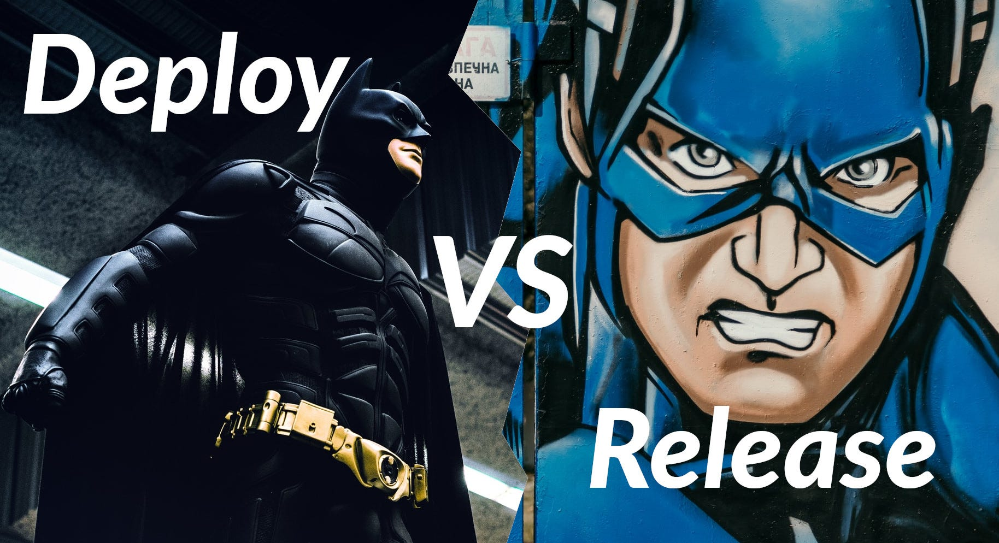

Web services change all the time. When a web service is about to be updated, you might have an approval process and a quality assurance process around that topic. You might need a manager signing off that the current release candidate (RC) can actually be released.
The release is a business process and a business decision.
When people say that they are releasing the software, they typically mean a crucial step of the release process. That could be the sign-off to allow the deployment. That could be informing clients that the software is finished.
The deployment is more clearly defined. It is strongly connected with the release but different from it.
Deploying a web service is the technical process of making the code run on some machine.
You deploy software in a concrete version to a concrete machine. The process of deploying is part of a release, but it is not the release.
Please note that you might not even have a release process. Maybe you don’t need to be able to document which version was running at which point in time. Maybe you don’t need to be able to jump back to specific code versions. If you deploy the latest version of the code often (Continuous Deployment, CD), this is very likely the case. Then the distinction between “release” and “deployment” blurs so much that you can use both terms synonymously.